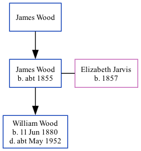

James Wood c1855 -
[ Home ] | [ Calendar ] | [ Surnames Index ] | [ Family History ]The child of James WoodJames Wood was born in Gravesend, Kent, England c. 1855 and married Elizabeth Jarvis (with whom he had 1 child, William Henry, ) at St Mary's Church, Battersea Church Road, Battersea, London, England on Jul 16, 18761.
Parents
Children
- William Henry was born on Jun 11, 1880
Citations
- England & Wales Marriages 1837-2005 - Findmypast
Media
England & Wales marriages 1837-2005 - BMD/M/1876/3/AZ/000308/010
England Marriages 1538-1973 - R_843164701
England Marriages 1538-1973 - R_853659878
Family Tree
Generated by ged2site. Last updated on Nov 13, 2024